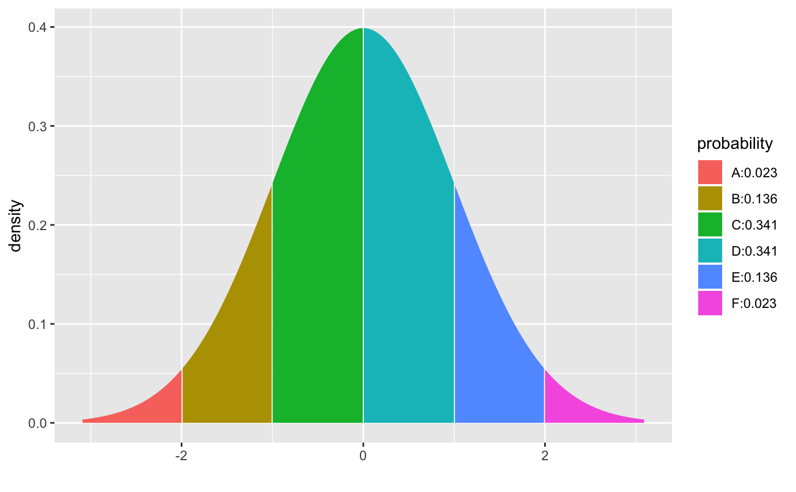
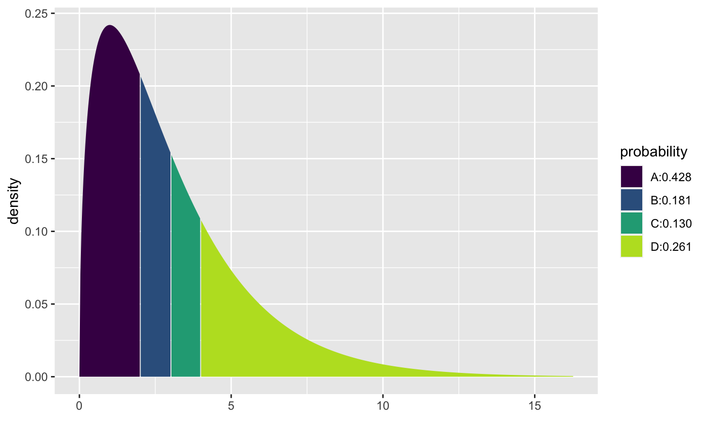
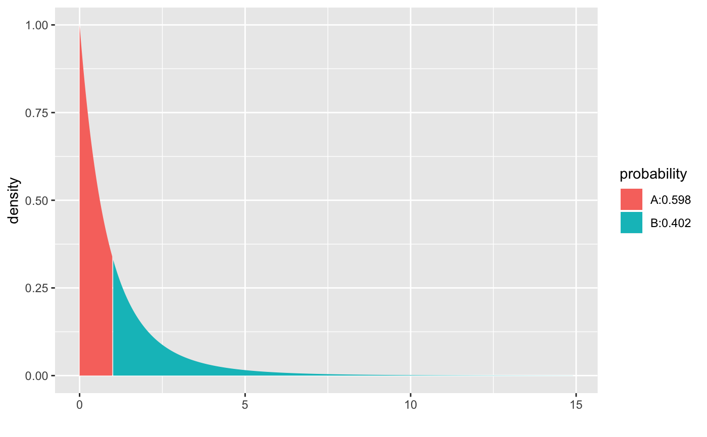
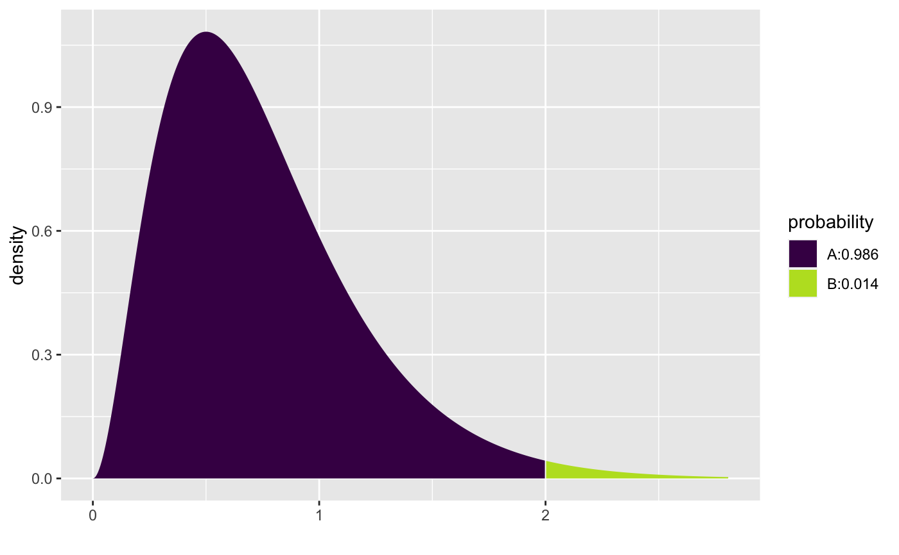

Illustrated probability calculations from distributions
pdist(dist = "norm", q, plot = TRUE, verbose = FALSE, invisible = FALSE, digits = 3L, xlim, ylim, resolution = 500L, return = c("values", "plot"), ..., refinements = list()) xpgamma(...) xpt(...) xpchisq(...) xpf(...) xpbinom(...) xppois(...) xpgeom(...) xpnbinom(...) xpbeta(...)
Arguments
| dist | a character description of a distribution, for example
|
|---|---|
| q | a vector of quantiles |
| plot | a logical indicating whether a plot should be created |
| verbose | a logical |
| invisible | a logical |
| digits | the number of digits desired |
| xlim | x limits |
| ylim | y limits |
| resolution | Number of points used for detecting discreteness and generating plots. The default value of 5000 should work well except for discrete distributions that have many distinct values, especially if these values are not evenly spaced. |
| return | If |
| ... | Additional arguments, including parameters of the distribution and additional options for the plot |
| refinements | A list of refinements to the plot. See |
Value
A vector of probabilities; a plot is printed as a side effect.
Details
The most general function is pdist which can work with
any distribution for which a p-function exists. As a convenience, wrappers are
provided for several common distributions.
See also
Examples
pdist("norm", -2:2)#> [1] 0.02275013 0.15865525 0.50000000 0.84134475 0.97724987pdist("norm", seq(80,120, by = 10), mean = 100, sd = 10)#> [1] 0.02275013 0.15865525 0.50000000 0.84134475 0.97724987pdist("chisq", 2:4, df = 3)#> [1] 0.4275933 0.6083748 0.7385359pdist("f", 1, df1 = 2, df2 = 10)#> [1] 0.5981224pdist("gamma", 2, shape = 3, rate = 4)#> [1] 0.986246